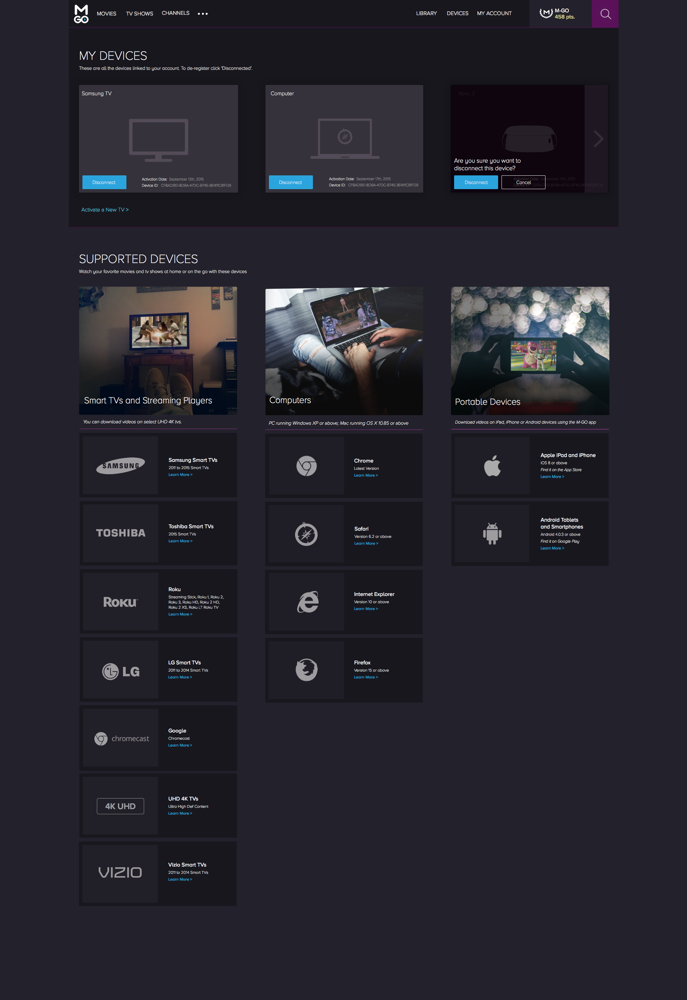
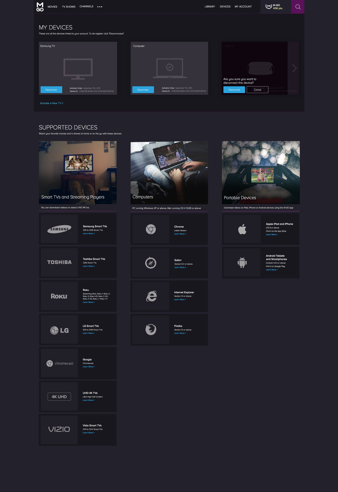

Working at M-GO
I'm blessed to be working at M-GO because of the amazing personalities I work with every day, but also because I've been encouraged to learn skills beyond my role as a UX/UI Designer on the web team. When I started at M-GO our company had begun a team rebuilding phase. With new employees starting every week, my boss thought it was a fun idea to create avatars of employees and departments that we could post on walls in order to build morale within the company. Below are a few illustrations of the Content Operations team that wanted their illustrations to be based off of the popular late 70s movie 'Alien'.

Brand Guide Lines
Our first initiative for a design overhaul of the M-GO website was creating our brand guidelines for all of our platforms. This was also the first major project I worked on. The site was originally designed with many different shades of purples and grays as well as various font sizes so it became difficult to maintain consistency for our developers over time. Our goal was to define an appropriate color pallete and font usage that would not only look familiar to our iOS and Android products, but fit with the direction and feel we wanted to go in.

Design 3.0
After creating a solid foundation to work from, our designers began breaking down the site piece by piece. We talked with the executive team about business goals moving forward and how our designs could help us reach those goals. The main objective was to make the site look more modern while educating users about our differences from other entertainment choices. Each of us tackled different sections and I started with redesigning our navigation.
 Our previous navigation was cluttered with icons and text while our hero image left new users guessing what M-GO was all about. The analytical data also showed that users weren't clicking through our carousal which showed a variety of movie deals.
Our previous navigation was cluttered with icons and text while our hero image left new users guessing what M-GO was all about. The analytical data also showed that users weren't clicking through our carousal which showed a variety of movie deals.
 In the revised navigation, elements have more white space so users could focus on the content and the hero image layout briefly mentions what makes us different from other entertainment products in our space. The Rewards icon is also more prominent here to spark curiosity about the feature.
In the revised navigation, elements have more white space so users could focus on the content and the hero image layout briefly mentions what makes us different from other entertainment products in our space. The Rewards icon is also more prominent here to spark curiosity about the feature.
Front End Development and Design
Since the beginning of Design 3.0 I've worked on the front end development of a couple pages of the M-GO website such as the hdr page. I experimented with parallax scrolling in order to explore concepts for future promotional pages and I've continued to work on the design for multiple pages of our website as we progress. I personally think that interaction design and animation is going to grow in order to educate us how to use future products so I've dabbled with jQuery, GSAP and javascript to get ready for the next wave of tech. Although I don't consider my self a javascript ninja yet, I do know the basic principles and it is a skillset I'd like to continue developing. You can checkout my Codepen that shows a few experiments like this or check out some of my recent designs below.
 
Back to Home Page

Back to Home Page